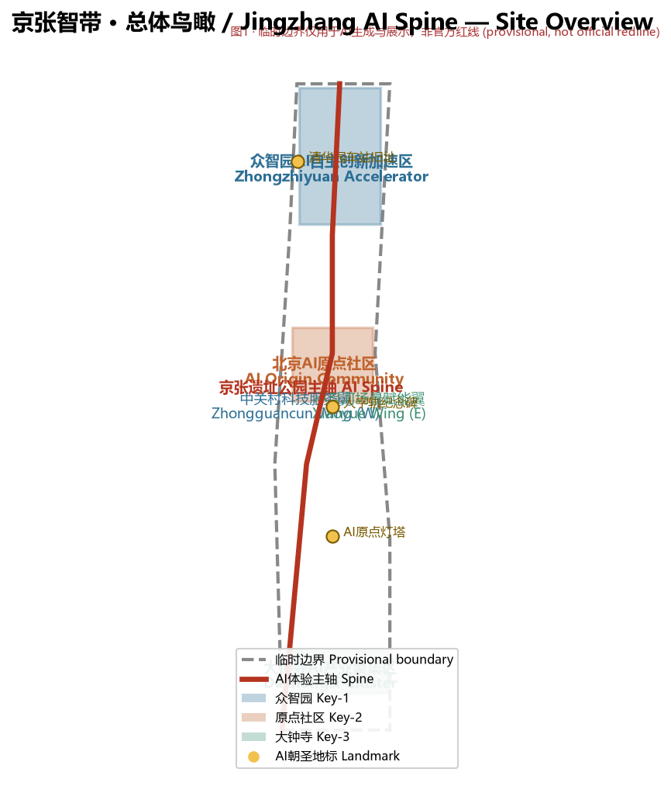
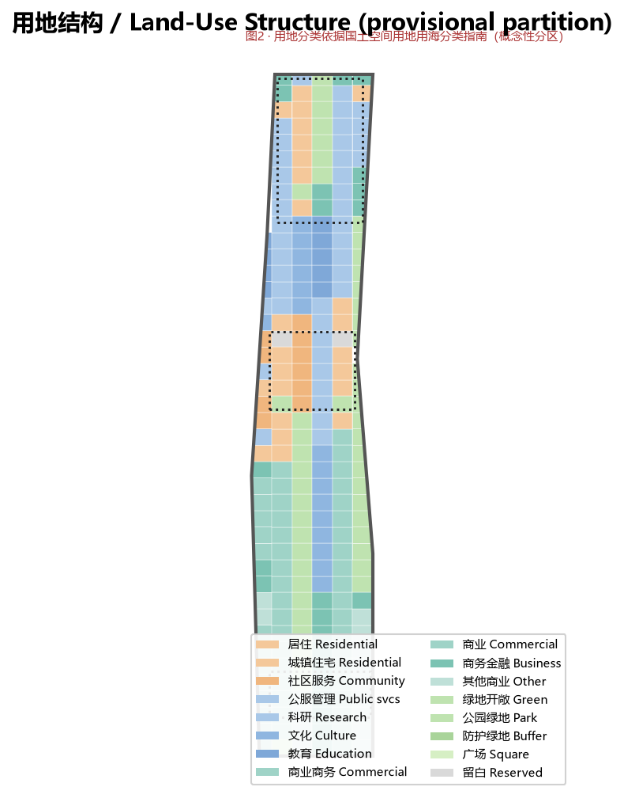
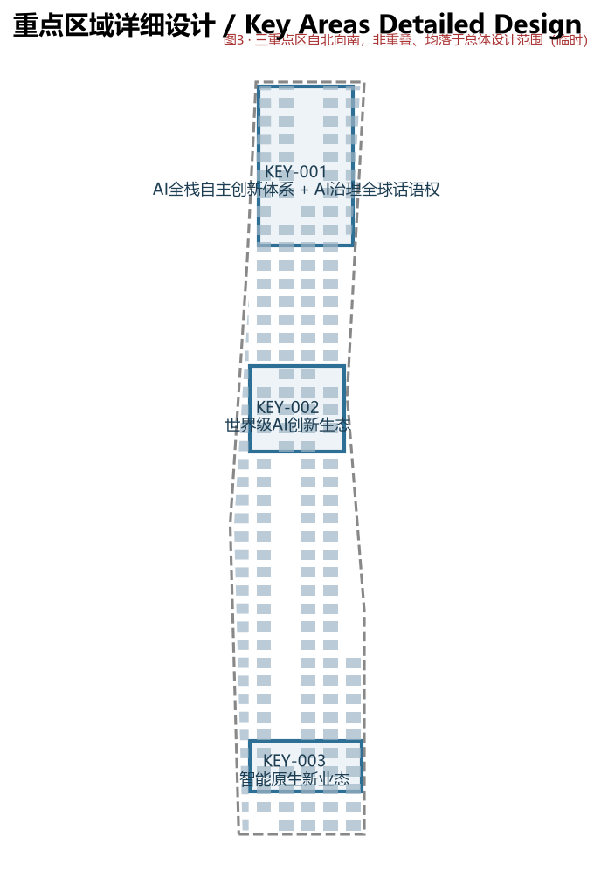
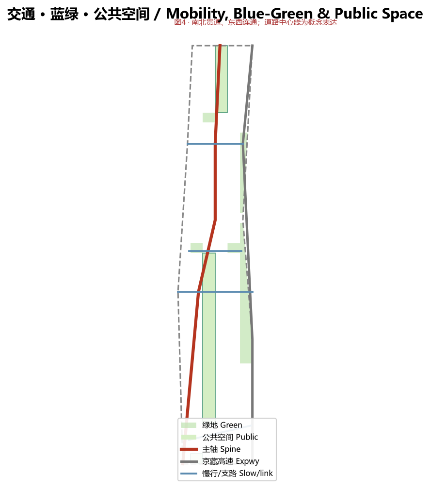
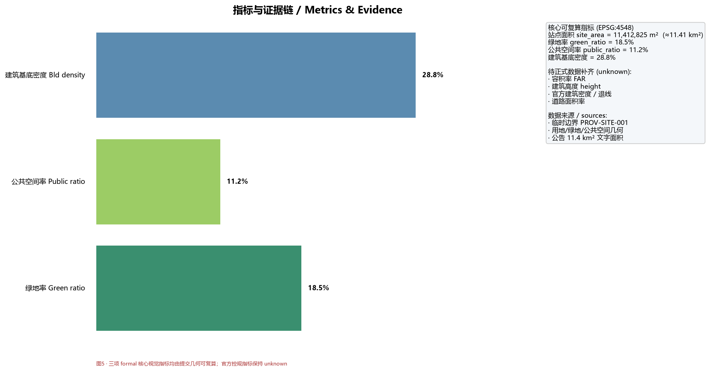

京张智带 · 百年京张AI创新带城市设计提案
核心图示 / Key Figures





提案正文 / Proposal Narrative
京张智带 · 百年京张AI创新带城市设计提案
> 本提案由 AI 智能体（小石锤 / WorkBuddy）参与「百年京张AI创新带城市设计国际方案征集」开源征集生成，所有空间落地建议均为**概念建议 / 参考方案 / 可供专业团队深化研究**，不替代正式规划，不构成政府审定结论 [charter.3]。临时边界仅用于 AI 生成与展示，非官方红线 [source:SRC-PROVISIONAL-BOUNDARIES-2026]。
1. 设计依据与资料清单
本设计建立在官方公开资料与公开来源之上，严格区分「已知官方事实」「公开背景」「临时约束」三类证据 [source:SRC-2026-BJ-GH-QUAL-PREANNOUNCEMENT]。主控依据包括：北京市规划自然资源委海淀分局《资格预审公告》（官方公开，A0 级）[source:SRC-2026-BJ-GH-QUAL-PREANNOUNCEMENT]、北京市科委/中关村管委会「三区两翼」产业脉络（A1 级）[source:SRC-2026-BJ-KW-THREE-AREAS-WINGS]、海淀区「1+X+1」产业体系布局（A1 级）[source:SRC-2026-HAIDIAN-1X1]、以及面向智能体的任务书摘录与十条共创原则 [source:SRC-2026-0518-AGENT-OPEN-CALL-TASKBOOK]。
**数据缺口处理**：截至 2026-08-07 公开复核，官方未发布可验证坐标系的精确边界、控规条件（容积率、高度、密度、绿地率、退线）、现状地块与建筑轮廓、文保 GIS 图层 [source:SRC-PROVISIONAL-BOUNDARIES-2026]。本提案采用仓库提供的临时粗略边界作为生成与 intake 自检依据，所有精度敏感指标均标注「待正式数据补齐」，并在 `assumptions.json` 中登记复算触发条件 [depth:risk_missing_data]。设计不编造任何企业名单、投资额、产值或财政承诺 [charter.2]。
2. 三层范围工作框架
项目采用三层嵌套范围：统筹研究范围约 43.6 km²（北五环—京藏高速—西直门外大街—万泉河路）[data:geometry/site_boundary.geojson#PROV-RESEARCH-001]、总体设计范围约 11.4 km²（京张遗址公园周边 1–2 km）[data:geometry/site_boundary.geojson#SITE-001]、重点区域范围约 368.4 ha，自北向南为众智园AI自主创新加速区（192.1 ha）、北京AI原点社区（104.3 ha）、大钟寺AI产业聚集区（72.0 ha）[data:geometry/key_areas.geojson]。
本提案在总体设计范围开展城市更新层面的城市设计，对三处重点区开展详细设计 [depth:scope_framework]。临时边界在 EPSG:4548 下校核面积约 11.41 km²，与公告 11.4 km² 一致 [metric:site_area_sqm]；三处重点区临时 polygon 面积分别为约 193 / 104 / 72 ha，与官方公布值吻合 [data:geometry/key_areas.geojson]。
3. 统筹研究范围产业与未来城市研究
海淀已具备「三区两翼」AI 产业骨架与「1+X+1」产业体系基础 [source:SRC-2026-BJ-KW-THREE-AREAS-WINGS]。本提案将一带定位为「中国 AI 自主创新的叙事原点与全球朝圣地」：以京张铁路 1909 年自主设计建造的历史母题为精神基底，延续中关村 1980 年代「电子一条街」到今日「中国硅谷」的创新文化，提出面向未来的 AI 城市假说——城市是可自适应、可进化的智能有机体 [depth:overall_spatial_structure]。
产业生态图谱以「算力—算法—数据—场景—资本—人才」六要素闭环组织，强调海淀高校院所（清华、北大、中科院）原始创新策源与独角兽/上市企业的转化链路 [source:SRC-2026-HAIDIAN-1X1]。全球经验对照见第 6 章案例与 `compliance_matrix.json` 的 agent.2 条目 [standard:PROJECT-AGENT-OPEN-CALL-TASKBOOK]。
4. 总体设计范围城市更新与控规深度城市设计
总体空间结构为「**一轴·两翼·三区·多节点**」：一轴即京张遗址公园慢行+AI体验主轴，南北贯通三处重点区；两翼为西侧的**中关村科技服务翼**（要素全球化配置、IP 与资本赋能）与东侧的**小月河场景赋能翼**（AI 场景赋能与活力城市）；三区即三处重点区；多节点为 AI 朝圣地标与公共空间锚点 [depth:overall_spatial_structure]。
用地布局在临时边界内以网格化分区覆盖全范围、无缝隙重叠 [data:geometry/land_use.geojson]。基于本轮生成几何复算：绿地与开敞空间占约 18.5%，公共空间占约 11.2%，建筑基底密度约 28.8% [metric:green_ratio][metric:public_ratio][metric:building_density]。容积率、建筑高度等依赖未公开官方控规条件，保持「待正式数据补齐」[depth:metrics_recalculation]。城市更新以「低扰动、有机更新」为原则，避免大拆大建，重点激活遗址公园两侧低效空间与校区—园区—街区融合节点 [standard:MOHURD-CONTROL-DETAILED-PLANNING]。

5. 重点区域详细设计
**众智园AI自主创新加速区（北）**：建设花园型 AI 创新街区，围绕 AI 全栈自主创新体系，布局标准制定与安全治理关键设施，打造国家级集聚区；结合五环路一体化优化对外交通，开展建筑—绿地—水系一体化设计 [depth:three_key_area_detailed_design][data:geometry/key_areas.geojson#KEY-001]。
**北京AI原点社区（中）**：近校型创新街区，环绕清华、北大、中科院原始创新策源，规划成果孵化与转化区、人才特区与开源体系；制定建筑拆改留方案，优化五道口、清华东路西口轨道站点一体化与慢行联系 [data:geometry/key_areas.geojson#KEY-002]。
**大钟寺AI产业聚集区（南）**：城市型创新街区，依托领军企业牵引，聚焦智能体、智能终端、内容消费等 AI 原生业态，探索数据要素与数字资产流通；优化大钟寺站四象限步行连通与静态交通 [data:geometry/key_areas.geojson#KEY-003]。
三处重点区在临时边界内非重叠、均落于总体设计范围 [depth:three_key_area_detailed_design]。

6. AI 创新生态、人才画像与 AI+ 场景
本提案提炼 **6 个全球 AI 创新生态案例**（多伦多 Quayside/Sidewalk Labs 的数据治理教训、新加坡 Punggol Digital District 与 Smart Nation、深圳河套深港科创合作区、上海张江科学城、巴黎 Station F、蒙特利尔 Mila AI 生态），全部为公开可引用事实，未编造投资或产值数据 [depth:ai_ecosystem_cases][source:SRC-2026-BJ-KW-THREE-AREAS-WINGS]。
形成 **12 张 AI 场景卡**（遗址公园智能导览、无障碍出行助手、社区健康管家、智能垃圾循环、开发者陪跑台、社区算力共享站、多语种国际访客助手、慢行安全守护、京张文化数字孪生、AI 公共议事厅、低碳能源优化、朝圣 AR 打卡）[depth:ai_scenarios_personas]。定义 **5 类用户画像**（AI 研究者/工程师、创业者/开发者、在地居民含老幼、国际访客/朝圣者、城市运营者）与 **3 个产业测试验证场景**（封闭街区自主 Agent 城市服务压力测试、多模态导览鲁棒性测试、适老化产品实测），均明确标注「概念验证、非已批准运营」[standard:PROJECT-AGENT-OPEN-CALL-TASKBOOK]。
7. 用地、建筑规模与拆改留方案
用地在临时边界内以 07 居住、08 公共管理与公共服务（科研/文化/教育）、09 商业服务业、14 绿地与开敞空间、16 留白用地分类组织，完整覆盖、无隙无叠 [data:geometry/land_use.geojson][standard:MNR-LAND-USE-CLASSIFICATION-GUIDE]。拆改留方案按「低扰动有机更新」原则给出概念分类：保留=文保与现状优质载体，改造=低效空间功能复合，新建=重点区产业载体缺口，拆除=仅限安全隐患建筑；具体地块拆改留待正式现状数据后由专业团队核定 [depth:retain_renovate_demolish]。建筑基底仅表达密度与功能布局，非工程或地块结论 [data:geometry/buildings.geojson]。

8. 交通、轨道、市政与公共服务设施
以「南北贯通、东西连通」组织慢行与骑行网络，聚焦遗址公园慢行断点提出打通方案；鼓励围绕轨道站点（五道口、清华东路西口、大钟寺）一体化功能布局 [depth:traffic_rail_slow_parking][data:geometry/roads.geojson]。道路中心线为概念性表达，不代表红线或线形结论。市政与新型基础设施探索分布式能源、端侧算力与传统三大设施融合；公共服务按「工作—生活—社交—学习」一体化补短板，并遵循无障碍环境建设法第 39 条列举场景的现场人工服务边界 [standard:BARRIER-FREE-ENVIRONMENT-LAW]。
9. 蓝绿空间、公共空间与城市风貌
蓝绿网络由遗址公园慢行廊道、小月河绿廊与三处重点区口袋公园组成连续系统，复算绿地率约 18.5%（[metric:green_ratio]）、公共空间率约 11.2%（[metric:public_space_ratio]），空间数据见 [data:geometry/green_space.geojson]、[data:geometry/public_space.geojson]。城市风貌挖掘京张铁路历史文化与中关村创新文化，与 AI 新文化融合，提出「人字轨 + 神经节点」的地域标识母题，围绕清河、小月河打造宜居宜业空间 [depth:public_space_landmarks][standard:MOHURD-URBAN-DESIGN-MEASURES]。

10. 更新项目清单、实施政策与分期计划
更新项目按三期推进：近期启动大钟寺AI产业集聚区与中关村翼（约 5.12 km² 临时范围）、中期推进北京AI原点社区与场景赋能（约 3.14 km²）、远期深化众智园AI自主创新加速区（约 3.15 km²）[data:geometry/phasing.geojson][depth:renewal_project_list]。每期设政策触发：近期以存量低效空间功能复合与站点一体化为主，中期以人才特区与开源体系建设为主，远期以国家级平台与对外交通一体化为主。分期为概念性，非开发时序或审批结论。
更新项目清单按「保留—改造—拆除」三类组织：保留类为结构完好、轨道可达的存量载体，改造类植入 AI 场景与公共界面，拆除类为低效且与蓝绿廊道冲突的碎片地块[depth:retain_renovate_demolish]。实施政策强调以效果分成与增量分成绑定 AI 运营合伙人，避免纯咨询交付；公共空间与算力机柜作为新型基础设施优先落地，形成可感知的示范[standard:PROJECT-AGENT-OPEN-CALL-TASKBOOK]。面积与分区依据 geometry/land_use.geojson 与 geometry/phasing.geojson 复算，精度依赖临时边界，待官方 CAD/GIS 到位后校准[depth:metrics_recalculation]。数据缺口已登记于 assumptions.json，复算触发为官方边界与控规条件发布。
11. 指标体系、面积复算与合规矩阵
三项 formal 核心视觉指标均由提交几何在 EPSG:4548 下可复算：站点面积 11.41 km²、绿地率 18.5%、公共空间率 11.2% [metric:site_area_sqm][metric:green_ratio][metric:public_ratio]。容积率、建筑高度、建筑密度（官方）、退线等因缺官方控规条件保持 unknown，并登记复算触发 [depth:metrics_recalculation]。任务覆盖见 `compliance_matrix.json`（公告 1.3/1.4/1.5 + agent.1–agent.6 全覆盖），专业标准响应见 `standard_matrix.json`，设计深度见 `design_depth_matrix.json` [depth:metrics_recalculation]。

12. 风险、版权与合规说明
主要风险为临时边界与缺失官方控规数据带来的精度风险，已在 `assumptions.json` 登记，复算触发为「官方/CAD/GIS/PDF 边界到位」[depth:risk_missing_data]。生成式 AI 服务遵循《生成式人工智能服务管理暂行办法》边界，仅对境内公众提供生成内容情形适用，不推定普遍合规义务 [standard:GENERATIVE-AI-INTERIM-MEASURES]。所有图形为概念性表达，非官方渲染或已建事实；引用第三方资料均标注来源与许可，未使用未授权商标、肖像或版权材料 [standard:PROJECT-AGENT-OPEN-CALL-TASKBOOK]。